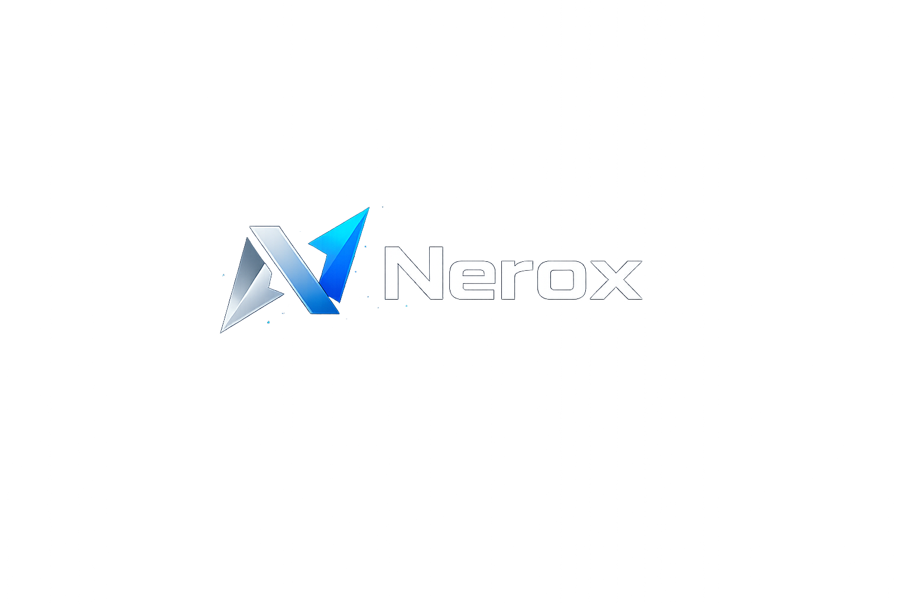
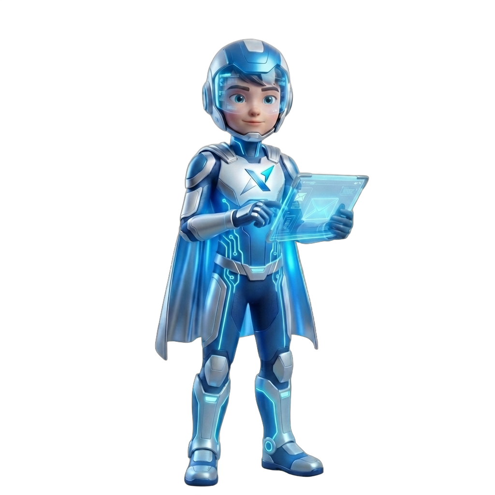

Nerox arbetar i bakgrunden och genererar strukturerade svar direkt i ert befintliga mailflöde. Inget skickas automatiskt. Ni har full kontroll.

Riktlinjer, tonalitet och struktur sätts centralt.
Olika prioriteringar och ansvar per funktion.
Individuellt arbetssätt – utan att bryta strukturen.
Full kontroll. Inget skickas utan godkännande.
Färdiga svar läggs som utkast i er inkorg.
Arbetar enligt tydliga företagsriktlinjer.
Inget skickas utan mänskligt godkännande.
Olika konfiguration per företag, roll och användare.
Mail inkommer
Nerox analyserar
Utkast skapas
Du granskar & godkänner
Detta är faktiska vardagssituationer hos företag som hanterar mycket e-post.
En kund frågar vad en tjänst kostar.
Du öppnar mailet.
Du letar upp rätt pris.
Du skriver svaret.
Du dubbelkollar så inget blev fel.
Tidsåtgång: 3–5 minuter.
Vid 20 liknande mail per dag: 60–100 minuter.
Ett färdigt utkast ligger i inkorgen.
Pris och villkor är korrekt ifyllda enligt företagets riktlinjer.
Du läser igenom och klickar skicka.
Tidsåtgång: 20–40 sekunder.
Besparing: cirka 30–60 minuter per dag.
Ett ärende om leveransproblem kommer in.
Du läser och tolkar situationen.
Du formulerar ett korrekt svar.
Du försöker hålla rätt tonalitet.
Tidsåtgång: 4–6 minuter.
Vid 15 ärenden per dag: 60–90 minuter.
Ett strukturerat svar genereras direkt.
Tonalitet och information följer företagets riktlinjer.
Du granskar och skickar.
Tidsåtgång: 30–60 sekunder.
Besparing: cirka 45–75 minuter per dag.
Ett samarbetsförslag skickas till VD.
Mailet kräver genomtänkt formulering.
Du skriver och justerar flera gånger.
Tidsåtgång: 8–15 minuter.
Flera sådana mail per vecka tar betydande tid.
Ett genomarbetat utkast genereras utifrån definierad tonalitet.
Strukturen är redan korrekt.
Du justerar vid behov och skickar.
Tidsåtgång: 1–2 minuter.
Tydlig tidsbesparing även på mer komplex kommunikation.
Nerox arbetar direkt mot er befintliga Microsoft 365-miljö. Ingen extern plattform. Ingen datalagring. Ingen kopia av er inkorg.
Användare kopplas upp via Microsoft Azure OAuth. Inga lösenord lagras eller delas.
Nerox arbetar mot er befintliga mailstruktur – inte via en separat plattform.
Mailhistorik sparas inte. Nerox tränas inte på ert material.
Nerox arbetar direkt i den inkorg ni redan använder i Microsoft 365.
Implementering sker strukturerat. När konfigurationen är klar kan justeringar göras centralt utan att påverka användarens arbetsflöde.
✖ Skickar automatiskt utan godkännande
✖ Lagrar mailhistorik
✖ Tränas på ert material
✖ Ersätter mänskliga beslut
Nerox är ett konfigurerat arbetsverktyg – inte en självlärande AI.